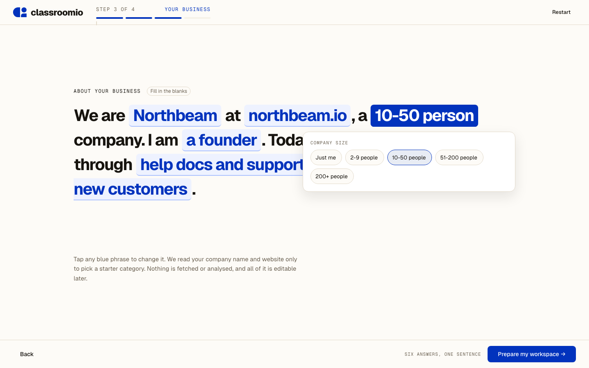
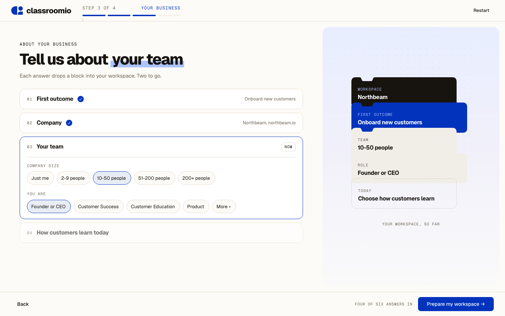
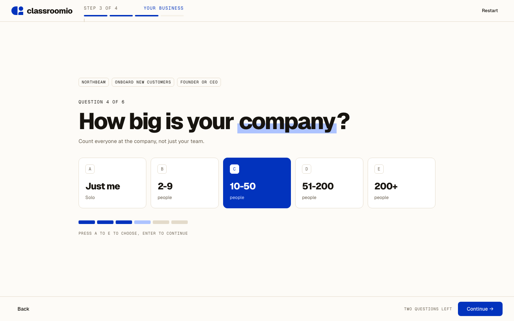
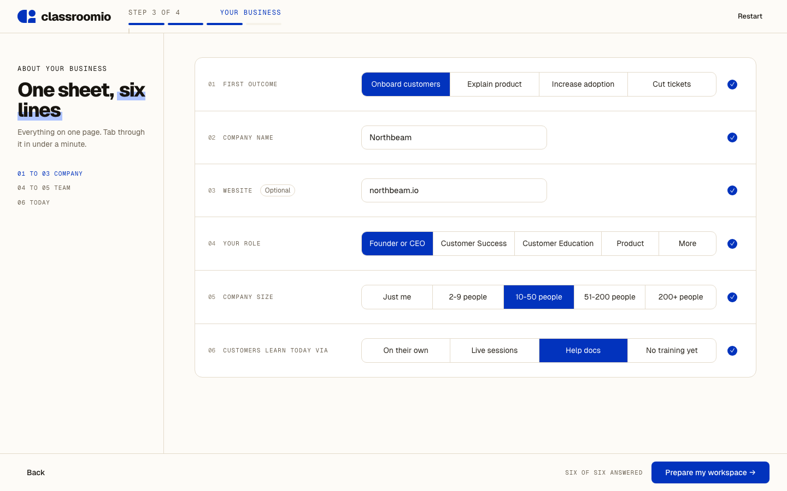
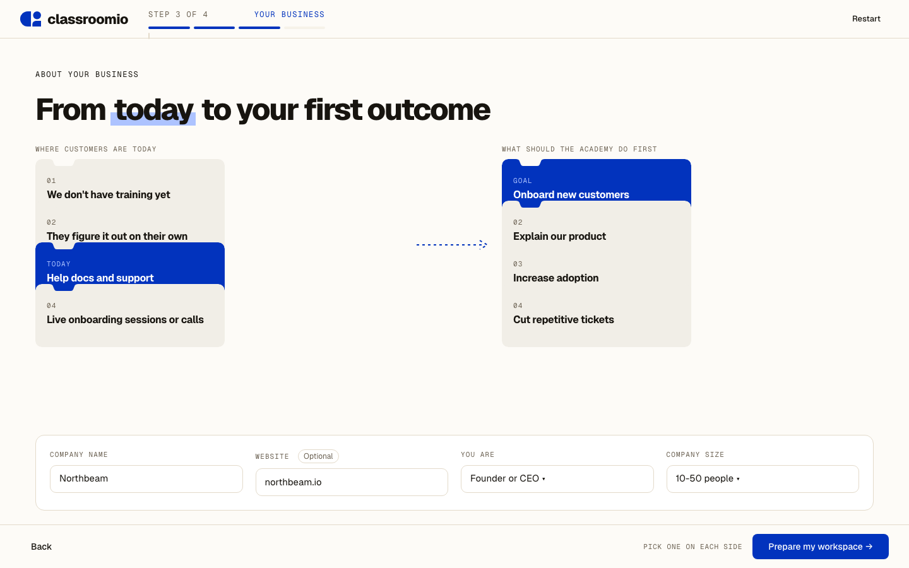

Step 3 · round two
All five carry the full production question set: first outcome, company, website, role, company size and how customers learn today. Open one for the full-size page.

Fill in a sentence. Six answers become one paragraph you can edit inline.

An accordion on the left; each answer drops a notch block into the workspace stack on the right.

Large type, keyboard letters on every option, the earlier answers kept as tags.

All six questions on one hairline sheet with segmented controls. Fastest for people who know their answers.

Where customers are today on the left, the first outcome on the right, joined by a path.